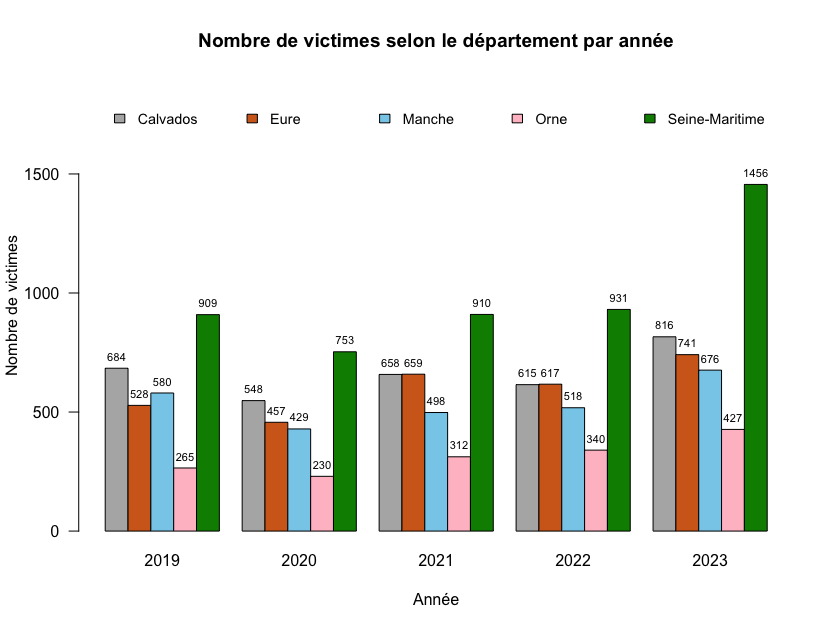
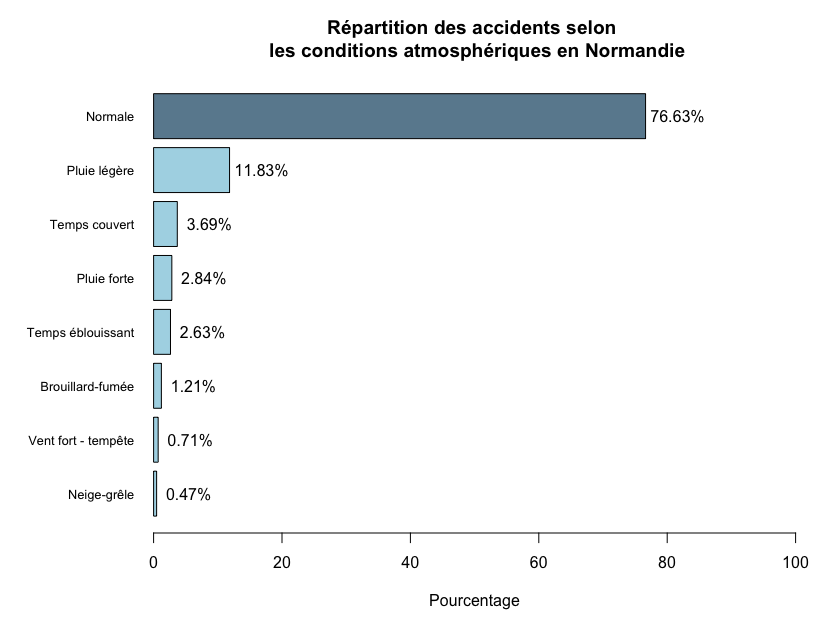
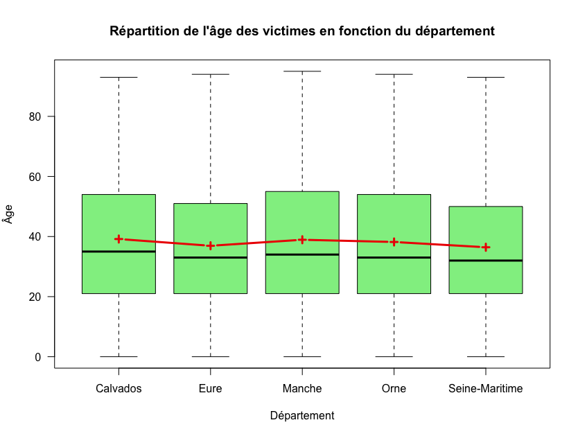

En France, la collecte systématique des données d’accidents corporels à partir des Bulletins d’Analyse des Accidents Corporels (BAAC) constitue une ressource précieuse pour étudier l’évolution des accidents et de leurs victimes à différentes échelles territoriales, notamment au niveau régional.
Dans le cadre de ce projet, nous nous sommes intéressés spécifiquement aux cinq dernières années disponibles (2019 - 2023) dans la région Normandie.
Afin de rendre le jeu de données exploitable, nous avons procédé à une préparation et un nettoyage des données. Nous avons ensuite réalisé une étude de l’évolution temporelle et territoriale des accidents et victimes, examiné certains facteurs liés aux conditions, infrastructures et lieux, avant de terminer par une analyse du profil des victimes et de la gravité des blessures.
  